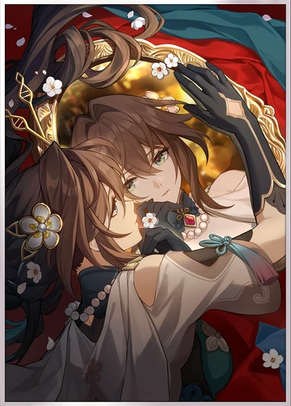

Recommended Endgame Stats
HP: 3700 - 5000+
DEF: 1000 - 1100+
SPD: 109 / 121 / 134 (Recommended)
Energy Regeneration Rate: 119.44%+
Break Effect: 180%+ (with A2 active)
Extras
Stack Break Effect until 180%.
Aim for a desirable Speed breakpoint next (134 minimum recommended).
After achieving these goals stack more Break Effect to improve Ruan's burst damage
or invest in more Speed or DEF% and HP% to make her more durable.
Ruan Mei's Top 3 Relics/Ornaments
Relics

Watchmaker, Master of Dream Machinations
★★★★★- Best
Watchmaker, Master of Dream Machinations is the best set for Ruan Mei as it provides her a lot of Break Effect for her and other units.
This easily allows Ruan Mei to reach the 180 Break Effect threshold by herself.

Thief of Shooting Meteor
★★★★☆- 2nd Best
Thief of Shooting Meteor is great for Ruan Mei
as it provides her with a substantial amount of Break Effect and bonus energy for every time she inflicts Break on an enemy.

Messenger Traversing Hackerspace
★★★☆☆- 3rd Best
Messenger Traversing Hackerspace is the next best thing
especially if Ruan Mei already has 180% Break Effect through Light Cones and Relic sub-stats.
Ornaments

Sprightly Vonwacq
★★★★★- Best
Sprightly Vonwacq is generally the best set since it provides Ruan Mei some Energy Regen, which is needed so that she can have full-uptime with her Ultimate.
This also increases her chances of being the first unit to move and apply buffs to the party.

Broken Keel
★★★★☆- 2nd Best
Broken Keel is great if Ruan Mei already has a high amount of SPD
and she is used on CRIT-centric teams.Ruan Mei must have at least 30% Effect RES for its effect to be active.

Lushaka, the Sunken Seas
★★★★☆- 3rd Best
If Ruan Mei has a lot of SPD, she can use Lushaka to increase the ATK of the first character in the team lineup.
Ruan Mei's Best Relic Stats
Body Piece
HP%>DEF%
HP% is preferred as it offers more survivability
but DEF% can be used if it has superior sub-stats.
Feet Piece
Speed
Best in slot.
Planar Sphere
HP%>DEF%
HP% is preferred as it offers more survivability
but DEF% can be used if it has superior sub-stats.
Link Rope
Energy Regen>Break Effect
If you are able to hit the 180% Break Effect cap without using a Break Effect rope Energy Recharge is always recommended.
Substats:
Break Effect (Until 180%) > SPD (Until Breakpoint) > HP% = DEF% > Effect RES (30% if using Broken Keel)
Best Lightcone

Past Self in Mirror (S1)
Powerful team buffing option with additional benefits for Break-scaling Harmony supports.
Gains more value in endgame modes with more waves of enemies.
Increases the wearer's Break Effect by 60/70/80/90/100%.
After the wearer uses their Ultimate, increases all allies' DMG by 24/28/32/36/40%, lasting for 3 turns.
Should the wearer's Break Effect exceed or equal 150%, 1 Skill Point will be recovered.
At the start of each wave, immediately regenerates 10/12.5/15/17.5/20 Energy for all allies.
Effects of the same type cannot stack.
Source: Event Warp (limited)
All images owned by Hoyoverse.
Most information owned/inspired by Prydwen.gg/star-rail